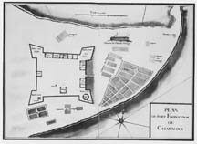
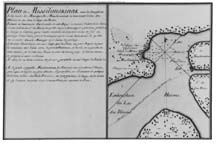
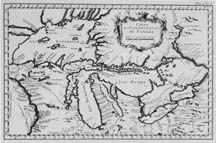
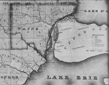
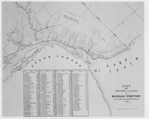
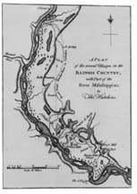
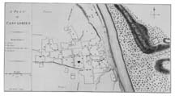

A virtual exhibit based on selections from Buisseret, David. Mapping the French Empire in North America: An Interpretive Guide to the Exhibition Mounted at the Newberry Library on the Occasion of the 17th Annual Conference of the French Colonial Historical Society (Chicago: The Newberry Library, 1991).
With the maps of this region we can examine the stages of settlement, from early posts like Fort Frontenac and Michilimackinac down to the settled agricultural societies in the areas round Detroit, Winnipeg, Dubuque, Vincennes and Illinois Country.For a long time there were no substantial towns in this area, so our maps are weak on urban development. But they are very strong on rural patterns of landholding, with many examples of the spread of the longlot system. Some of the most telling images come from the time of the U.S. General Land Office survey, when the rectangular system butted up against the by-then ancient longlots. On the whole, the surveyors obeyed their instructions to observe existing patterns of landholding, which is why in many places the longlots survive to the present day, mute testimony to the early presence of the habitants.
This plan, which may well be the work of Chaussegros de Léry or his workshop, shows Fort Frontenac in 1673 on the north shore of Lake Ontario, where Kingston now stands, at a place known to the Indians as "Cataracouy." This was obviously a strategic site, controlling access to the Great Lakes from the Saint Lawrence River valley. There are numerous plans of the fort, dating from 1685 onwards; several are preserved at the Archives Nationales in Paris. The early ones do not show any Indian presence, but by the time of our plan the "cabannes des sauvages" are numerous; one longhouse is interestingly shown in elevation. The gardens are also extensive, and the other features outside the walls of the fort are a barn and stables (top left) and limekiln (top right). The latter is interestingly drawn, no doubt representing a circular stone kiln, probably lined with brick, and a ramp up which wood and lime could be wheeled in order to feed the furnace.Some of the lime was probably used on the fields, and some went into cement for the building of the fort. This was constructed in the classic European style, with four corner bastions named after saints, and a single entrance over a moat, surveyed by the guard-house. The fort was well equipped, with a powder magazine (lower left), a bakery, a well, a smithy, a circular food-store and a hospital. Along the northern wall were the chapel and the lodgings for the garrison, sheltered from the wind and open to as much sun as possible.
References: Lamontagne and Vachon 1982.
The two lower plans (not reproduced in this exhibit, which shows only the upper plan, of Michilimackinac) show places that we have already described. On the left is Fort de Chambly, shown here in relation to its village and mill. On the right is Fort de Frontenac, looking southwards; the Saint Lawrence River comes in from the left, and Lake Ontario is on the right. It is a pity that this sketch is so summary, for it would have been a good chance to show us more of the environs of Fort Frontenac.The upper plan, for which no counterpart seems to exist elsewhere, shows Michilimackinac, on the strategic juncture between Lakes Huron (right) and Michigan (left, "Lac des Illinois"). The main settlement is on the north shore, around the "Maison des Jesuites." To the north of it are shown two Indian villages, and to the south is "Missilimakinac," with more houses around a small palisaded fort. The legend tells us that among the inhabitants were already some French women, and that during the trading season in 1716 there were about 600 French coureurs de bois there. To the south of the main town were the "champs des sauvages," where presumably some corn was grown. To the east, in the bay, the "peche du poisson blanc" is shown; the white fish were very abundant at this time, and could no doubt help the community to survive the very harsh winters. On the southern peninsula are also shown some houses around a small palisaded fort; this would eventually be the site of the large French fort captured by the English, and now transformed into a major historical site.
References: Cole Harris, McKee
In 1764, Bellin published his Le Petit Atlas Maritime in five volumes at Paris. The first volume dealt with North America and the West Indies, and contained 102 maps. It covered the whole area, using maps drawn from the work of the different European cartographers, and was a demonstration of the remarkable prowess of both French mapmaking and Parisian printing. The map shown here comes from volume I and was "number 6." It shows roughly the same area as the previous manuscript map, but introduces some changes, mostly in the direction of a truer delineation of coastlines. Fort Frontenac ("Fort de Cataracouy") is this time prominent, as is the town of Detroit. Lake Superior has an improved outline, though it still contains far too many islands and its shape is much inferior to that of the early Jesuit map (number 8). Following the manuscript, the printed version has a non-existent line of mountains running down the center of what will be the state of Michigan; we are also offered the alternative of "Fleuve St Louis" for the Mississippi River. At least two lead mines ("mines de plomb") are shown on the Upper Mississippi, where the French would soon begin mining operations on a large scale. Like the manuscript, the printed version offers a scrupulous set of latitudes and longitudes on its margins. In spite of the occasional corrections offered on the printed version, its outlines are in general coarser and less detailed than those of the manuscript; this was perhaps the inevitable result of the transition from handwriting to copper-engraving.
References: Karrow
This map dates from the early period of U.S. westward expansion, when the township-and-range system was being established throughout the Midwest. However, it is of interest to us because it shows with great fidelity the former pattern of French landholding around Detroit. The city had been founded in 1701, and for several decades was primarily a mission and trading-post, to which furs came from a wide area. In the 1740s the fur-trade began to be siphoned off by English settlers from Pennsylvania, and the French Crown resolved to strengthen Detroit as a barrier against westward English expansion, establishing it as an agricultural settlement. Settlers were induced to come to the Detroit region by various concessions, so that numbers increased considerably between 1749 and 1755. However, they remained quite low in absolute terms, so that by 1760, when the fall of French Canada occurred, there were still only about 2,500 habitants and métis. By the end of the eighteenth century these settlers were to be found in three main groups, shown on our map. The largest was around the town of Detroit itself, where we see the words "Old French locations." Just to the south, and running into the Detroit settlement, were the longlots of the French along the River Rouge. Our map shows detail only for U.S. territory, but there were corresponding French holdings on the eastern bank of the Detroit River, where the town of "Sandwich" is shown. The third group was along the River Raisin, 30 miles to the south, with French Town near its mouth (opposite Monroe). The "Old French locations" posed a problem to the surveyors of the township-and-range system, into whose neat quadrilaterals the longlots to incongruously cut. But the surveyors were instructed to respect these existing property rights, which is what now allows us precisely to locate areas of French settlement.
References: Cole Harris, Lajeunesse, Parkins, Vachon 1985
This is the middle section from a three-section map setting out French holdings in the Michigan territory about 1810. It shows in close detail the area first described on the previous map, around Detroit. The city itself is marked down by the river, and has the star-shaped street pattern that the early citizens hoped would give their city a plan like that of L'Enfant's Washington; today that pattern survives only in fragments. Opposite Detroit is the gridiron of the town of Sandwich. This had grown up on the site of the Huron village marked on Montresor's map of 1763; on Greeley's map only one "Indian village" is shown, to the north-west of Detroit. Each plot receives a number, keyed to the list of mostly francophone landholders, among whom there was not a great variation in size of holding. There is a large rectangular holding of 10,000 acres granted to the Michigan Territory by the Federal Government to defray the cost of public buildings; this was a device often used by the central government to aid the fledgling states without having to pay out federal tax money. At this stage the French names are still quite intact and correct. Detroit, of course, is hard to anglicize, but most of the river-names have more or less their correct French forms. The exception is "Prisq Isle," down towards what is now Grosse Pointe. As time went by, there was a tendency for French names to become more and more mangled throughout the Midwest.
References: Michigan
Thomas Hutchins (1730-1789) was a lieutenant in the (British) 60th Regiment of Foot, who served in North America and made numerous maps, many of which were published; he eventually became Geographer to the United States. He derived the map shown here directly from a French manuscript, now preserved in Paris. It is a remarkably elegant little map, which plainly sets out the situation of the French settlements in the Illinois Country about 1770. At the top is Saint Louis, which had received an influx of French people since the English conquest of Canada in 1760. Then there is a string of villages on the eastern bank of the Mississippi River, below the bluff line, indicated by hachures; this was fertile bottom-land, much used by the Indians. From the top we have Cahokia, first settled at the beginning of the eighteenth century. Then, after "Belle Fountain" and "St. Phillips" we come to what Hutchins calls "Fort Charters," the French Fort de Chartres. This lies close by Prairie du Rocher; the settlement was closed off to the south by the village of Kaskaskia. By the middle of the eighteenth century about 1500 people - 500 of whom were slaves - lived in these villages. They produced a formidable quantity of cereals and other crops, much of which was exported downstream to the new focus of French power around New Orleans. Indeed, the Illinois Country, which had been largely peopled from Canada, looked more and more towards New Orleans as time went by, and the Mississippi valley came to be a sort of French preserve.
References: Jelks, McDermott
The little town at Kaskaskia was the most southerly among the settlements in the Illinois Country. As the plan shows, it lay on the west bank of the River Kaskaskia, with the Mississippi River to the west again of it. This plan was drawn in 1776 by the English officer Captain Philip Pittman, and accompanied his report. At that time Kaskaskia had about 65 French families, numbering about 350 people, together with over 300 slaves. Its site on the River Kaskaskia was advantageous, for it allowed boats coming out of the Mississippi River to escape that turbulent stream, and pull up to the bank in quiet water; the River Kaskaskia also had sites for water-mills ("Road to Madame Paget's Mill"), essential for grinding the wheat produced in the fertile bottom-lands. The town had not been laid out formally, like many other French towns in the New World, but had just grown at the whim of the inhabitants, who did not feel the need to fortify themselves against the neighboring Indians. The church ("D") was the most substantial structure, and had been built by the Jesuits, who had been expelled in 1763. By the time of this plan, their lands were in the hands of "Monsieur Beauvais," who had 86 slaves and had furnished "Eighty-six thousand weight of flour" to the king's magazine. Kaskaskia continued to thrive into the nineteenth century, but in 1881 was largely destroyed when the Mississippi River changed its course and swallowed up the town.
References: Belting, Buisseret, McDermott